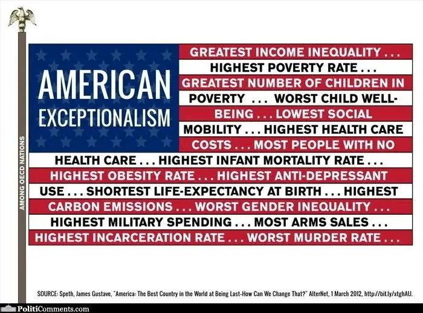

收录于合集

作品简介
作者： 理查德·内森·哈斯（英语：Richard Nathan Haass，1951年7月28日－），出生于纽约布鲁克林区，犹太人。2003年7月至今，任美国对外关系委员会主席，此前曾就任美国国务院政策规划办公室主任和前国务卿科林·鲍威尔的幕僚。美国参议院已批准他成为大使职位的候选人，同时他还曾是代表美国的阿富汗前景斡旋者，并且接替乔治·米切尔成为美国对北爱尔兰问题特别使节，这也使他获得了国务院所颁发的杰出服务奖。2003年底，米切尔·赖斯接替他成为特使。1989年至1993年，理查德·哈斯是老布什的特别助理和美国国家安全委员会在近东和南亚事务的高级主管。1991年，哈斯因在沙漠盾牌行动和沙漠风暴行动中帮助发展和解释美国的政策而荣获总统公民勋章。在这之前，他曾担任过国务院和美国国防部的多个职务，同时也曾是参议院的立法幕僚。
哈斯另外的职务也包括布鲁金斯学会副主席和外交政策研究主任、汉密尔顿学院国际关系研究客座教授，卡内基国际和平基金会资深会员，哈佛大学肯尼迪政府学院公共政策教授，国际战略研究所研究员。
来源：
****https://www.foreignaffairs.com/articles/united-states/2021-09-29/biden- trump-age-america-first
导读
唐纳德·特朗普(Donald Trump)被认为是一个异类——这位美国总统的外交政策标志着美国与国际主义（internationalism）的尖锐但短暂的决裂，而国际主义是美国与世界互动的标志。他认为联盟没有什么价值，并摒弃了多边制度。他急切地退出了现有的国际协议，如巴黎气候协议和2015年的伊朗核协议，并退出了新协议，如跨太平洋伙伴关系(TPP)。他将自己的愤怒发泄在美国的民主伙伴身上。
乍一看，美国总统拜登的外交政策与特朗普截然不同。他声称重视美国在欧洲和亚洲的传统盟友，支持多边主义，并赞扬他的政府对“基于规则的国际秩序”的承诺。他认为气候变化是一个严重的威胁，军备控制是必不可少的工具。他认为我们这个时代的斗争是民主和“专制”之间的斗争，他承诺召开他所谓的“民主峰会”，以重新建立美国在民主事业中的领导地位。“美国回来了，”他在就职后不久宣布。
但这些差异尽管意义重大，却掩盖了一个更深层次的事实：现任总统和前任总统的外交政策之间的连续性远比人们通常认为的要大。这种连续性的关键因素甚至在特朗普担任总统之前就出现了，也就是在奥巴马(Barack Obama)政府期间。这表明了一种更长期的发展方向——美国对世界的态度发生了范式转变。 在这种明显的波动之下，后冷战时期美国外交政策的轮廓正在浮现。
旧的外交政策模式产生于第二次世界大战和冷战，建立在认识到美国的国家安全不仅仅依赖于关注本国狭隘定义的关切的基础上。保护和推进美国在国内和国际上的利益，需要帮助引导并维持一个国际体系的存在，无论这个体系多么不完善，它都将支持美国的长期安全和繁荣。尽管有一些失误(如朝鲜战争和越南战争），但结果在很大程度上证实了这些假设。美国避免了与苏联的大国战争，但仍以极为有利的条件结束了冷战；自第二次世界大战结束以来，美国的实际GDP增长了8倍，名义GDP增长了90多倍。
新范式摒弃了这种做法的核心原则：即美国在更广泛的全球体系中有着至关重要的利益，而这一体系有时需要进行艰难的军事干预，或将当前的国家偏好放在一边，以支持能带来长期利益的原则和安排。 新的共识反映的不是一种全面的孤立主义——毕竟，对中国采取强硬态度很难说是孤立主义——而是对这种国际主义的拒绝。今天，尽管拜登承诺“帮助引领世界走向一个更和平、更繁荣的未来”，但现实是，美国人希望从国际秩序中获益，而不是进行艰苦的建设和维护工作。
这种正在兴起的民族主义方法对世界的影响是显而易见的，这也解释了奥巴马、特朗普和拜登等不同政府之间的连续性。它能否制定出一项促进美国安全、繁荣和价值观的外交政策，则完全是另一回事。
01
美国对自身优势的“挥霍”
THE SQUANDERING
就像任何范式的转变一样，现在的转变之所以发生，仅仅是因为前几年发生的许多失败——无论是真实的还是察觉到的。30年前，冷战结束了，美国从40年的斗争中走出，在某种程度上取得了领先地位，这种地位在历史上几乎没有先例。无论从绝对还是相对的角度来看，美国的力量都是巨大的。欢呼“单极时刻”可能有些夸张，但也没有言过其实。
回顾这三十年，历史学家会对美国在其立场上做过和没有做过的许多事情提出正确的批评。有一些重要的“成就”：德国在北约内的统一，纪律严明地处理1990-91年海湾战争，美国领导的军事和外交努力介入南联盟的战争，新贸易协定的形成，总统的艾滋病紧急救援计划(PEPFAR)拯救了数百万人的生命。
但这些成就必须与美国的失败(包括作为和不作为)相比较。 华盛顿在建立关系和制度方面几乎无所作为，缺乏二战后美国外交政策所特有的创造力和雄心。当时任杜鲁门政府国务卿的迪安·艾奇逊(Dean Acheson)将他的回忆录命名为《参与创造世界》(Present at the Creation)时，人们并不认为这是一种延伸；没有哪位最近的美国国务卿会在自己的回忆录中提到“创造”这个词。尽管美国拥有无与伦比的实力，但在解决全球挑战与旨在应对这些挑战的机构之间日益扩大的差距方面，美国几乎没有采取什么行动。
令人遗憾的是，美国正在形成的对世界的态度捉襟见肘，充满了弄巧成拙的矛盾。
华盛顿在很大程度上未能适应中国的崛起。它决定扩大北约，这违背了丘吉尔的格言“胜利时要宽宏大量”；煽动俄罗斯的敌意，却没有充分实现联盟现代化或加强联盟。非洲和拉丁美洲得到的关注只是断断续续的，甚至是有限的。最重要的是，911之后的阿富汗和伊拉克战争是设计和执行上的失败，导致代价高昂的过度扩张，这是美国对不符合战略逻辑的大中东地区更广泛关注的一部分。乔治·w·布什(George W. Bush)和奥巴马(Obama)政府将其外交政策重点的很大一部分放在了一个地区，该地区人口仅占世界人口的5%，没有大国，经济依赖于化石燃料的浪费资产。
在评估冷战后的美国外交政策时，人们想到的词是 “挥霍”（squander） 。美国错过了更新这个体系的最佳机会，这个体系曾成功地发动冷战，进入一个被新挑战和新对手定义的新时代。与此同时，由于阿富汗和伊拉克战争，美国公众在很大程度上对这一被广泛视为代价高昂、失败的外交政策感到不满。美国人开始将数百万制造业工作岗位的消失归咎于贸易(尽管新技术是罪魁祸首)，以及日益加剧的不平等，2008年金融危机和疫情加剧了对精英的民粹主义怀疑。面对日益严峻的国内问题，包括衰败的基础设施和摇摇欲坠的公共教育，外资的介入被视为代价高昂的分散注意力的做法。一种新的外交政策范式的舞台已经建立。
02
极端的竞争
EXTREME COMPETITION
特朗普和拜登之间政策延续的第一个也是最突出的因素是大国竞争的中心地位——尤其是与中国的竞争。事实上，自拜登担任总统以来，美国对华政策几乎没有改变：正如特朗普政府时期的国家安全委员会(National Security Council)高级官员、特朗普政府对华政策的主要设计师博明(Matthew Pottinger)在文章中正确指出的那样，“拜登政府在很大程度上保留了前任的政策。”拜登本人曾谈到与中国的“极端竞争”，他的印度- 太平洋事务协调员宣布“被广泛描述为接触的时期已经结束。”
两届政府之间的连续性可以从他们对台湾的态度上看出来。此外，这种连续性不仅体现在台湾问题。据悉，拜登政府维持了特朗普时代的关税和出口管制，并正在研究对中国大规模产业补贴展开调查的方案。并在涉疆、涉港、疫情等问题上加大对华施压。美国加强了美日印澳四边安全对华，并启动了与澳大利亚和英国的互补战略倡议。特朗普政府首次正式使用的“印度- 太平洋”一词也在继续使用。
可以肯定的是，拜登政府与特朗普政府在一些重要领域的做法存在分歧，包括专注于寻找在气候变化问题上合作的方法，以及努力与盟友建立共同立场。然而，拜登认为中国是美国的主要竞争者甚至对手的观点已经变得普遍而根深蒂固，两届政府的做法相似之处远远大于任何分歧。政府对美国另一个大国竞争对手的政策也大同小异。自拜登上任以来，美国对俄罗斯的政策实质上几乎没有变化。特朗普对俄罗斯总统弗拉基米尔·普京(Vladimir Putin)莫名其妙的钦佩已经不复存在。但无论特朗普个人对普京的看法如何，特朗普政府对俄罗斯的姿态实际上相当强硬。它引入了新的制裁，关闭了俄罗斯驻美国领事馆，并加强和扩大了美国对乌克兰的军事支持——所有这些都在拜登的领导下继续下去。两届政府的共同观点似乎是，美国对俄罗斯的政策应该主要包括损害限制、防止紧张局势，无论是在欧洲还是在网络空间，防止局势恶化为危机。即使拜登愿意延长美俄军控协议并启动“战略稳定”谈判，也主要是为了防止俄罗斯的进一步的侵蚀，而不是取得进一步的进展。寻求与莫斯科“重置”的日子早已一去不复返了。

03
美国的民族主义
AMERICAN NATIONALISM
这种对大国的关注，是特朗普和拜登二者对美国民族主义的共同拥抱。特朗普政府急切地采纳了“美国优先”的口号和理念，尽管这个标签的起源是一股带有对纳粹德国同情的孤立主义。拜登政府的民族主义不那么明显，但其“面向中产阶级的外交政策”的口号反映了一些类似的倾向。
拜登政府对新冠疫情的初期应对也体现了“美国优先”的倾向。 尽管美国国内的疫苗供应远远超过需求，但美国的疫苗出口受到限制，而且一直在努力扩大生产能力以扩大出口。 这种对国内的关注是目光短浅的，因为在对美国造成巨大损害之前，高度传染性的变异病毒能够在世界其他地区出现。 面对中国和俄罗斯的疫苗外交，美国还丧失了一个在国际上展示美国技术优越性和慷慨的机会。
美国的贸易政策也受到类似力量的影响，显示出特朗普和拜登之间的进一步连续性。拜登避免了前者的夸张，特朗普抨击所有贸易协定——除了他自己的政府谈判的那些。尽管特朗普政府的协议只是旧协议换汤不换药，例如，美国- 墨西哥-加拿大协定(U.S.-Mexico-Canada Agreement)在很大程度上遵循了备受谴责的北美自由贸易协定(North American Free Trade Agreement)。但拜登政府对加强世界贸易组织、谈判新的贸易协定或加入现有协定，包括TPP的后续协议、全面和进步跨太平洋伙伴关系协定(CPTPP)，几乎没有表现出任何兴趣。尽管这样做有重要经济和战略考量。如果不加入该协议，美国将被置于印度- 太平洋经济秩序的边缘，也意味着在其他领域失去机会，比如通过跨境碳税来推进全球气候目标，或者利用该协议在经济上制衡中国。
04
不惜代价地撤退
拜登新外交政策的核心是希望从大中东地区撤出，那里曾是所谓的“永久战争”的发源地，为美国外交政策的范式转变做出了巨大贡献。阿富汗是这种共同动力的最显著例子。2020年2月，特朗普政府与塔利班签署了一项协议，将2021年5月1日定为美军从阿富汗撤军的最后期限。谈判中断并削弱了阿富汗的实力，协议本身也没有要求塔利班放下武器，甚至没有承诺停火。与其说这是一份和平协议，不如说是一份促进美国撤军的协议。
拜登就任总统时，美国在阿富汗的战略曾经是“不自量力”的特点，但现在这种情况已经成为过去。在奥巴马政府执政期间，美国驻阿富汗部队的人数曾达到10万人，现在减少到不足3000人，他们的作用主要局限于训练、建议和支持阿富汗部队。2014年(美国与塔利班达成协议的几年前)，随着作战行动的结束，美国的战斗死亡人数大幅下降。美国的适度存在为来自盟国的约7000名士兵(以及数量更多的承包商)提供了支撑点，并为阿富汗政府提供了心理和军事支持——足够的存在，也就是说，可以避免喀布尔的崩溃，但不足以实现胜利或和平。20年后，美国似乎在阿富汗找到了与利害关系相称的承诺。
美国人想要的是利用国际秩序的坐享其成，而不是建立和维护它的艰苦工作。
**
**
然而，拜登政府拒绝了重新谈判或废除该协议的选择。相反，它在所有方面都遵守了特朗普的协议，但有一点除外:美国全面撤军的最后期限延长了约100天，至2021年9月11日(然后提前完成了撤军)。拜登拒绝将美军撤离与当地情况或塔利班的进一步行动联系起来。和之前的特朗普一样，他认为阿富汗战争是一场“永远的战争”，他决心不惜一切代价退出这场战争。拜登不仅实施了他继承的特朗普政策;他的政府以特朗普式的方式做到了这一点，很少与其他国家协商，让北约盟国陷入混乱。(其他决定，包括取代法国向澳大利亚出售潜艇，或在取消针对欧洲游客赴美的新冠相关限制方面行动迟缓，也同样阻碍了跨大西洋关系。) 多边主义和同盟优先的外交政策在原则上让位于美国优先的单边主义。
**
**
在大中东其他地区，拜登政府同样延续了特朗普减少美国足迹的做法。它抵制住了进一步介入叙利亚事务的任何诱惑，更不用说利比亚或也门了;宣布美国将只在伊拉克维持小规模的非战斗军事存在;支持《亚伯拉罕协议》，但不情愿地参与结束以色列和哈马斯之间战斗的外交努力;并避免发起任何旨在达成巴以和平协议的新尝试。
乍一看，伊朗似乎是个明显的例外。特朗普曾强烈批评2015年与伊朗达成的核协议(拜登担任副总统期间谈判达成的)，并于2018年单方面退出该协议;相比之下，拜登政府(其高级官员中有几名在协议谈判中发挥了重要作用)明确表示了重返协议的愿望。但事实证明，恢复协议说起来容易做起来难，因为两国政府一直未能就具体义务或顺序达成一致。此外，新的强硬派伊朗政府对签署拜登政府寻求的那种“更长久、更强大”的协议没有兴趣。因此，拜登政府很可能面临与前任政府相同的选择，即伊朗将提高其核武器和导弹能力，并在整个地区发挥影响力。即使伊朗再次接受对其核活动的时间限制，美国仍将不得不决定如何应对伊朗的其他挑衅行为。

05
价值观是关键问题
QUESTIONS OF VALUE
即使在那些拜登的措辞与特朗普截然不同的问题上，政策变化也比预期的要温和。 考虑一下两位总统对价值观在外交政策中的作用的看法。特朗普是一位交易型领导人，他似乎常常认为民主是一种障碍，并试图与世界上的许多领导人建立密切的私人关系。他对普京大加赞扬，并与朝鲜领导人金正恩互致“情书”。他高度赞扬了土耳其的埃尔多安和匈牙利的欧尔班·维克托，同时诋毁了盟友的领导人，包括德国总理默克尔、法国总统埃马克龙和加拿大总理贾斯汀·特鲁多。他甚至对加拿大和欧盟征收关税。
相比之下，拜登则宣称，美国正处于“与对手的竞争”之中，宣布了举行“民主峰会”的计划，并承诺优先考虑与拥有美国价值观的国家的关系。然而，这些承诺，无论多么真诚， 都没有使促进人权和民主成为美国外交政策中更加突出的部分。 正当的愤怒表达并没有导致他人行为的重大变化;这些愤怒的目标通常愿意也能够接受美国的批评，甚至越来越多地接受美国的制裁，这要归功于其他支持来源的增长。军事政变后的缅甸就是中美竞争的一个典型的例子。对于古巴政府去年夏天对抗议活动的野蛮反应，以及海地总统遇刺等事件，华盛顿方面的回应微乎其微。无论华盛顿对沙特侵犯人权的行为有什么担忧，这些担忧都不太可能阻止与利雅得在伊朗、也门或以色列问题上的合作，比如，如果沙特领导人表示有兴趣加入亚伯拉罕协议(Abraham accord)的话。
当然，当其他利益或优先事项出现时，美国总统总是允许搁置对人权和民主的公开承诺。 冷战时期的“自由世界”通常都谈不上自由。但如今美国外交政策的更广泛转变，既强调大国竞争，又强调短期国内优先事项，使得这些权衡更加频繁和尖锐。拜登在中国的邻近国家也捉襟见肘，例如，菲律宾总统杜特尔特一直致力于加强与越南的关系。它与俄罗斯签署了一项武器控制协议，但无视反对派领导人阿列克谢·纳瓦尔尼(Alexei Navalny)的监禁。它在很大程度上忽视了印度国内印度教民族主义的兴起，而倾向于加强与印度的关系，以平衡中国。
由于从阿富汗撤军执行不力，以及遗弃了许多最容易受到塔利班报复的阿富汗人，华盛顿进一步丧失了制高点：美国退出了一个项目，尽管有缺陷和失败，为改善数百万阿富汗人，尤其是妇女和女孩的生活做出了巨大贡献。当然，美国脆弱的民主状态的悲惨现实——尤其是在1月6日的保卫国会山叛乱之后——进一步削弱了华盛顿在海外推广民主价值观的能力。
这并不是说特朗普政府和拜登政府在外交政策上没有重要的分歧——比如气候变化：否认气候变化已经让位于对绿色技术和基础设施的新投资，对化石燃料生产和使用的监管，以及对巴黎气候变化进程的参与。但是，当其他问题(其中许多问题反映了更大的连续性)受到威胁时，这些不同的领域很少被优先考虑。华盛顿一直不愿利用贸易来推进气候目标，不愿因巴西破坏亚马逊雨林而对其实施制裁，也不愿为帮助贫穷国家转向绿色能源做出有意义的贡献。
06
政策连续性的问题
THE PROBLEM WITH CONTINUITY
理论上，美国外交政策的进一步连续性应该是一件好事。 毕竟，如果一个大国的外交政策以一种让盟友感到不安、让对手感到有机可乘、让选民感到困惑、让建立全球规范和制度的长期承诺变得不可能的方式，在各个政府之间摇摆不定，那么它就不太可能发挥作用。美国对世界的新态度的问题不在于国内政治共识的缺失;相反，在外交政策方面，两党意见相当一致。 问题在于，共识严重不足，最重要的是，它未能认识到数千英里之外的事态发展对国内发生的事情有多大影响。
**
**
它也充满了弄巧成拙的矛盾，尤其是在涉及中国的问题上。尽管美国视中国为对手，但华盛顿仍需要北京的支持，以应对从朝鲜、阿富汗到全球卫生等一系列地区和全球挑战。虽然拜登政府多次谈到支持结盟，但在很多情况下，美国的盟友并没有做好准备，采取拜登政府认为必要的措施来对抗中国。事实上，当涉及到中国和俄罗斯时，大多数美国盟友都反对美国出于地缘政治原因限制敏感领域贸易和投资关系的呼吁。姿态不能决定政策。
世界更大的混乱将使“重返更好”（build back better）变得更加困难。
**
**
与中国竞争是必要的，但它不能为美国的外交政策提供组织原则，在这个时代，包括气候变化、流行病、恐怖主义、扩散和网络中断在内的全球挑战越来越多地定义了美国的外交政策，所有这些都带来了巨大的人力和经济成本。
矛盾还在继续。阿富汗战争显示出美国对国家建设的支持有限，但在非洲、拉丁美洲和中东的大部分地区，如果这些地区的政府要更有能力应对当地的安全挑战，加强朋友的能力是至关重要的，这是他们变得更加民主和美国承担更少负担的先决条件。加入贸易集团不仅是出于经济原因，也是为了帮助遏制中国的不公平贸易行为，缓解气候变化。经济民族主义(尤其是“购买美国货”条款)树立了一个先例，如果其他国家效仿，将会减少全球贸易，不利于合作开发新技术，从而更容易与中国竞争。在中东，尽管各方都在关注限制美国的参与，但目前尚不清楚美国如何兑现自己的承诺，遏制伊朗发展核武器和导弹能力，以及扩大其直接或通过代理人的地区影响力。
07
美国形单影只
AMERICA ALONE
不管这种新模式有什么缺点，都没有回头路了;历史没有重头再来的机会。华盛顿也不应该回到一种外交政策，这种政策在过去30年的大部分时间里，无论是做了什么，还是不做什么，基本上都失败了。
新国际主义的出发点应该是明确认识到，尽管外交政策始于国内，但它不能止步于国内。 尽管美国的影响力减弱，国内分歧加深，但它面临的世界既面临传统的地缘政治威胁，也面临与全球化相关的新挑战。一位美国总统必须在不忽视国外发生的事情的情况下，寻求解决美国的问题。世界上更大的混乱将使“重返更好”的任务——或者任何为国内重建选择的口号——变得更加困难，如果不是不可能的话。拜登承认了“21世纪的基本真理……我们自己的成功与别人的成功息息相关”;问题是，他是否能制定并执行一项反映这一点的外交政策。
美国也不可能单枪匹马取得成功。 它必须通过正式和非正式手段与其他国家合作，制定国际规范和标准并组织集体行动。这种方法需要欧洲和亚洲的传统盟友、新伙伴、国内可能需要美国或国际援助的国家，以及非民主国家的参与。这将需要美国使用所有可用的权力工具——外交、贸易、援助、情报和军事。美国也不能冒险让不可预测性给自己带来不可靠的名声;其他国家将决定自己的行动，特别是在平衡或迁就中国的问题上，这在很大程度上取决于他们认为美国作为伙伴将会有多可靠和积极。
如果没有新的美国国际主义，可能的结果将是一个更不自由、更暴力、更不愿意或更没有能力应对共同挑战的世界。具有讽刺意味和危险的是，当美国比以往任何时候都更受全球事态发展的影响时，它却更不愿意执行一项试图影响全球事态发展的外交政策。
排版 | 贾希铭
文章观点不代表本平台观点，本平台评译分享的文章均出于专业学习之用, 不以任何盈利为目的，内容主要呈现对原文的介绍，原文内容请通过各高校购买的数据库自行下载。